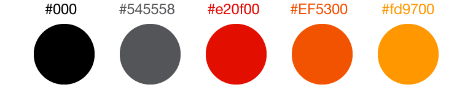

Our Colors
Kalkomey Logo Colors
The Kalkomey brand colors are taken from the logos in their various forms.

Basic Web Copy Colors
The basic website colors are not brand colors, but merely reflect the conventional standards for all KE and -ed websites.

Primary Website Colors
These are the colors that should be used for Kalkomey and -ed websites. This includes link text, color fields, buttons, etc.